比較元 c973d289f1f8c125669d750d0e9bec198738f3f6、実装
7132c5fae6c02fee8bc0636b990f5e3743bb177b。両案ともワールド垂直Y軸回転。前の二枚外殻や柄軸回転は比較元に使っていません。実装ブランチをビルドしたpreviewで確認しました。
19枚・外6／中8／内5を維持し、outer-4（高さ4.9）とouter-3（4.5）を主輪郭へ。脇役の開きと高さを締め、最長花弁を初期姿勢と90°で読める方位へ移しました。幅広い腹とカップ断面を保ち、先端だけを鋭く絞ります。中央は選択された「花弁の間から見える支柱」とし、3本を4.12〜4.35まで伸ばし、短い内冠と9本のピンの上へ見せています。花弁を超える槍状の中芯は追加していません。
外層の隣接ペアを結ぶ段付きヨーク、主花弁のソケット・開いたガード・二節リンクを組み立てました。柄は下寄り1か所の片締めクランプ、副軸の小さな逃げ、石突きの段差と短いスリットを調整。主花弁と主要リンクをoutline、他の花弁と支柱・ガードをcomponent、微細部をdetailへ配分し、線幅・不透明度の既存値は維持しています。
| 項目 | 変更前 | 変更後 |
|---|---|---|
| 線分 | 4784 | 4874 |
| 共有頂点 | 4110 | 4154 |
| 全長 | 9.720 | 9.900 |
| 花冠長 | 4.222 | 4.427 |
| 全周最大径 | 3.884 | 3.539 |
| 267×258の固定縮尺 | 22.716 | 21.591 |
| フィット係数 | 0.84 | 0.84 |
| 90°花冠の高さ／幅 | 0.971 | 1.364 |
| 270°花冠の高さ／幅 | 1.120 | 1.460 |
線分の増加はガード・リンク・支柱・クランプなど実部品の追加によるものです。曲線分割数は16／区間を維持。形状調整に伴って全周境界から固定縮尺と中心が再算出されますが、角度ごとの再フィットや中心追尾はありません。全周・形状・投影・曲線誤差・ソースSHA256
自己完結の前後比較HTMLを保存してローカルで開けます。16秒／周・約30fps・DPR上限2。初期モデル方位30°、初期画面傾斜左35°、垂直軸位相0°開始。標準は全周境界の和集合による共通固定縮尺・中心、チェックを外すと各案の通常固定フィットです。実寸の比較画像は通常設定です。1周の連続実行記録。
上段がc973d28、下段が今回の造形。すべての角度ラベルはワールド垂直Y軸位相です。DPR 2画像は高解像度のため、拡大率100%とCSS寸法を区別してください。
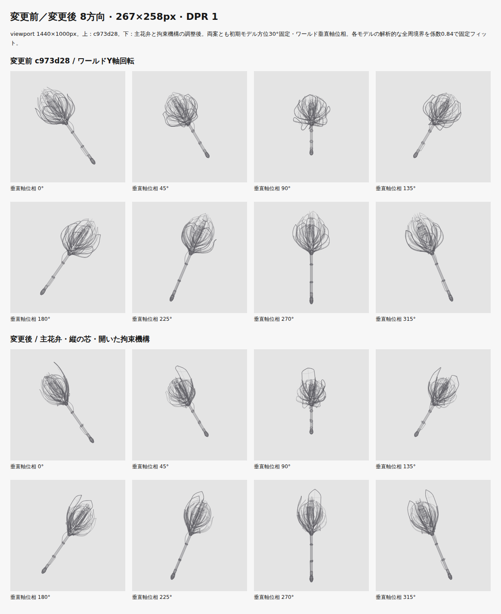
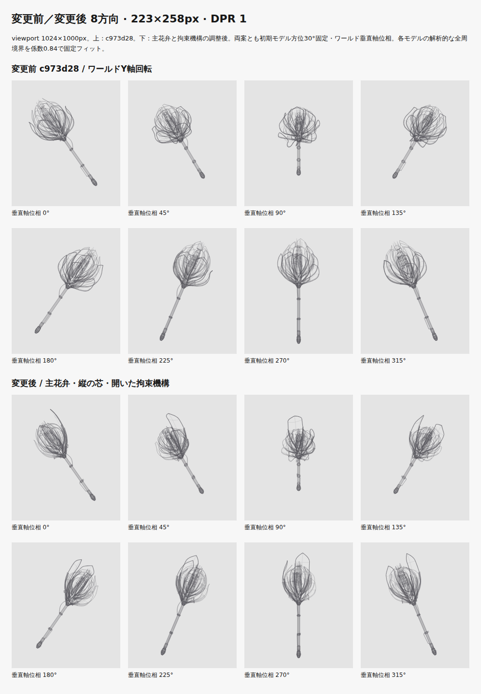
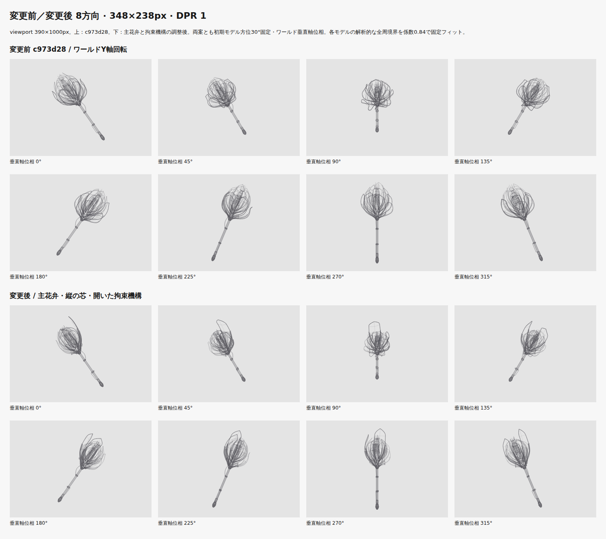
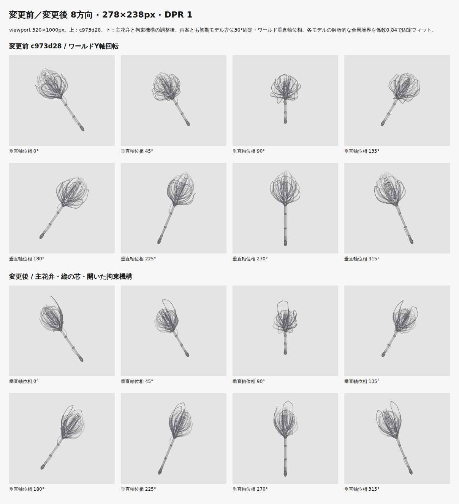
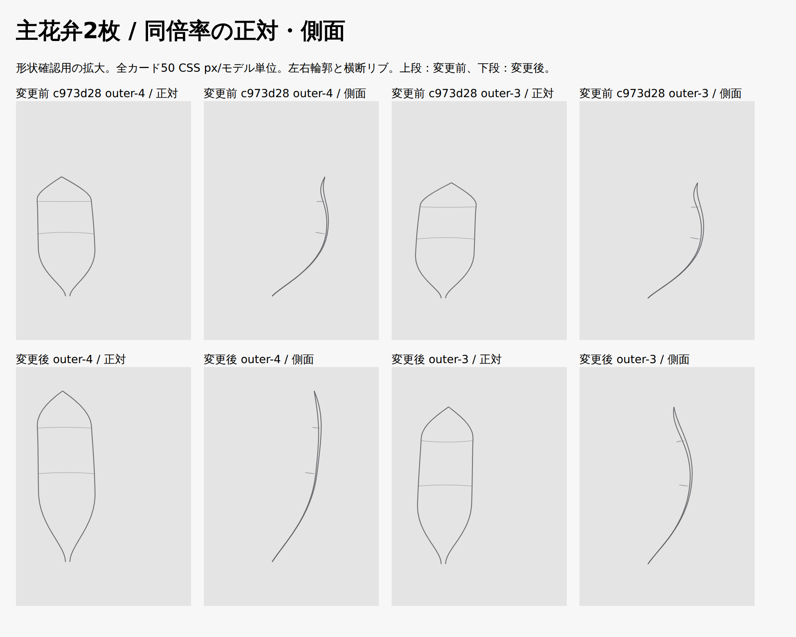
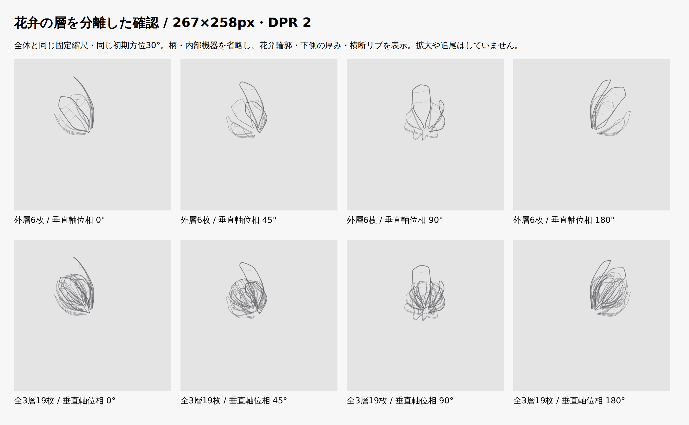
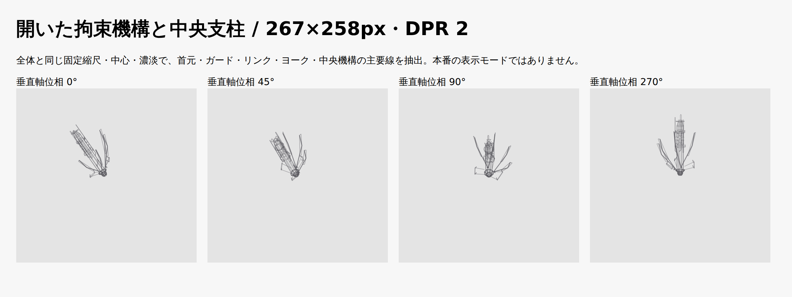
前後とも同じviewport、DPR、初期位相。パネルの位置・寸法を12条件で照合しています。比較描画は実preview Canvasと128条件でPNGバイト照合します。
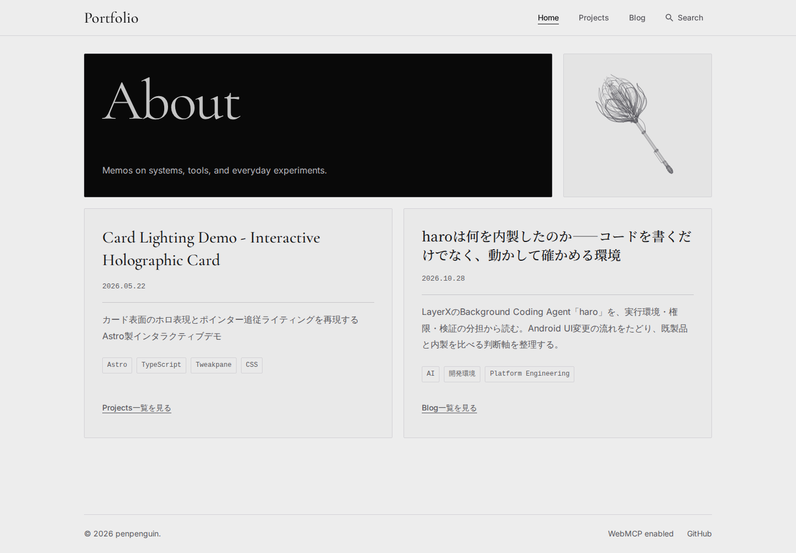
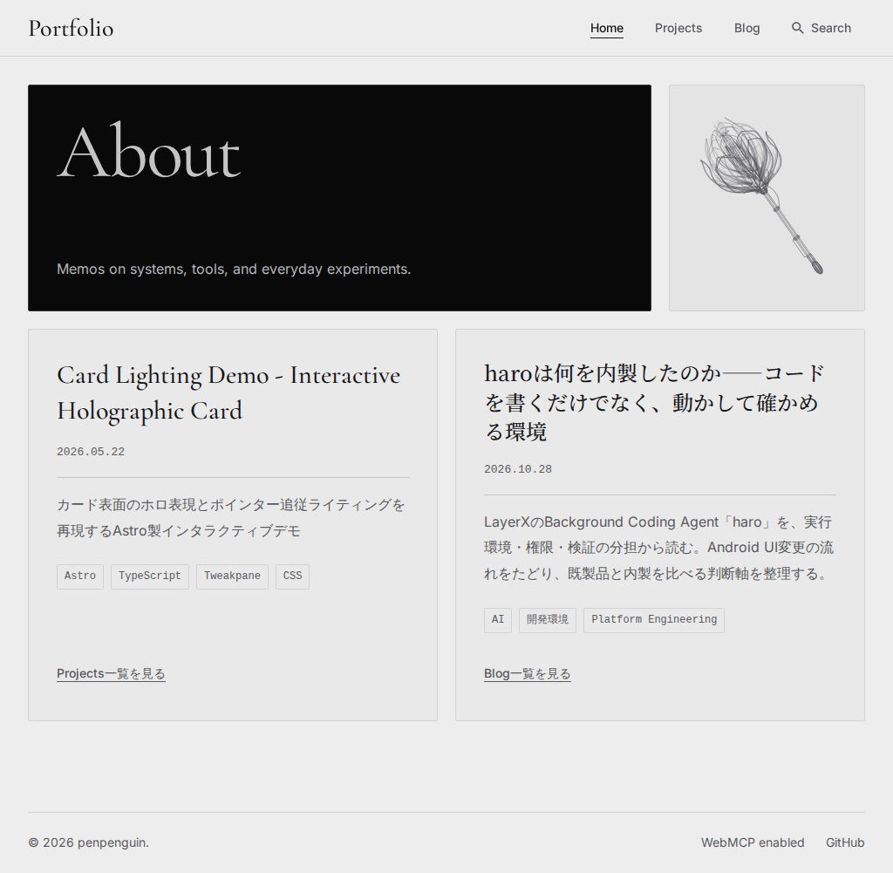
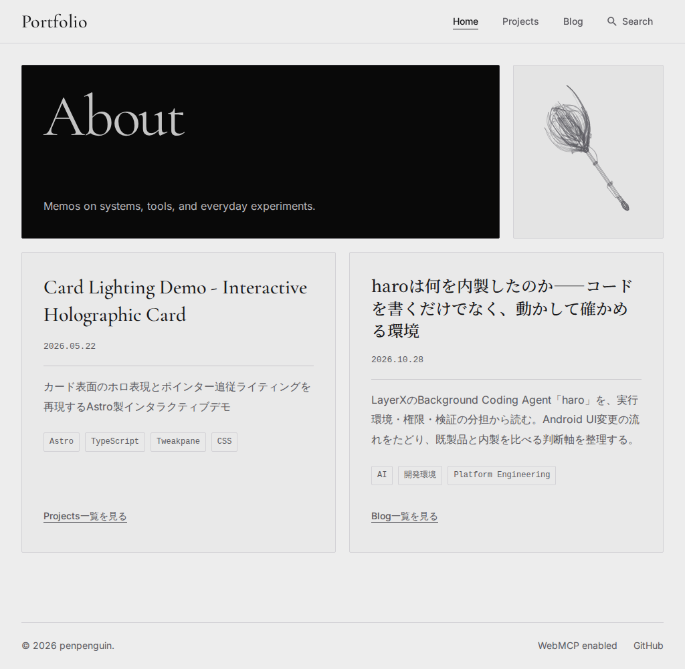
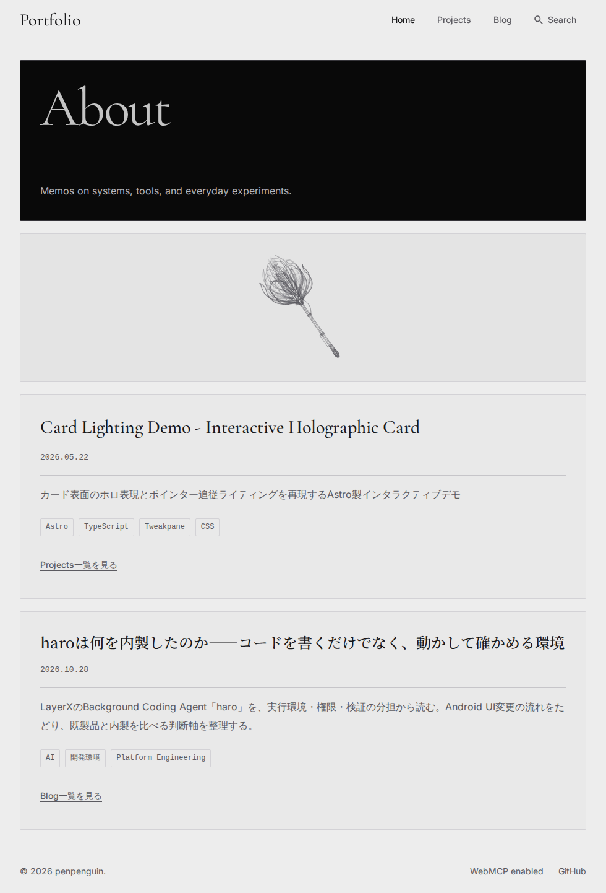
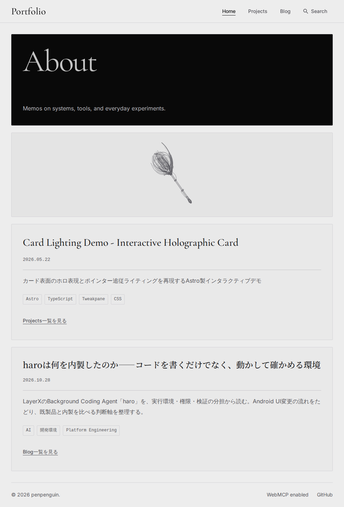
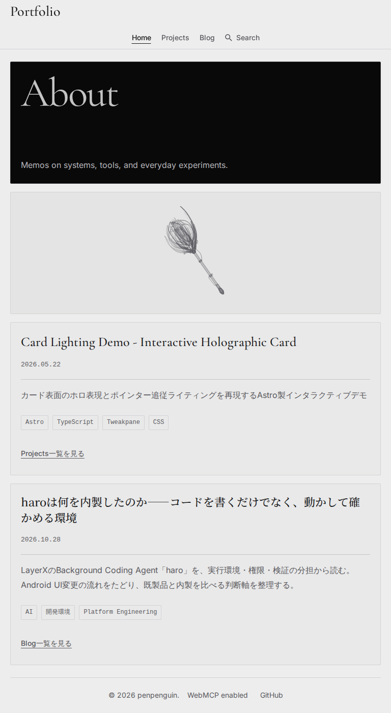
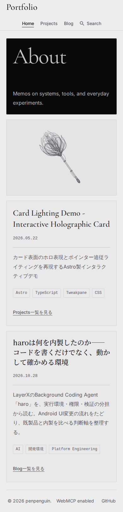
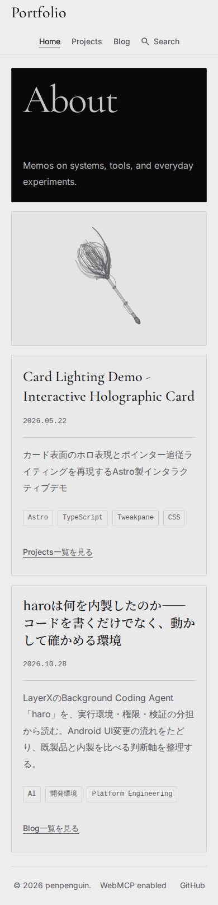
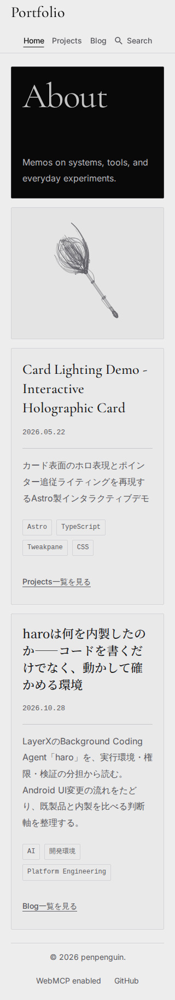
6.18.54.1-microsoft-standard-WSL2 / AMD Ryzen 5 3600 6-Core Processor / Chromium 156.0.8078.4 / Node v26.12.1。60実描画をウォームアップ後480実描画を採取。clearRect開始〜最後のstrokeのCPU時間で、投影・線描画と計測負荷を含み、描画を省略したrAFやGPU合成は含みません。
| 条件 | 中央値 前→後 | p95 前→後 |
|---|---|---|
| 267×258 / DPR 1 | 1.2 → 1.3 ms | 1.9 → 2.0 ms |
| 348×238 / DPR 2 | 1.2 → 1.4 ms | 1.9 → 2.2 ms |
この環境では目安の8ms以内。全端末保証ではありません。変更前の全480サンプル×2条件 / 変更後の全480サンプル×2条件
| 配信量 | 変更前 | 変更後 |
|---|---|---|
| Home HTML raw | 871469 B | 888420 B |
| Home HTML gzip | 77745 B | 78536 B |
| 静止SVG raw | 861235 B | 878186 B |
| 静止SVG gzip | 73177 B | 73932 B |
checkは97ファイル・エラー／警告／ヒント0。lint、53ファイル338単体テスト、Astro＋Pagefindビルド成功。ブラウザーテストは最終再実行で92件通過。初回はBlogアーカイブの戻る直後の年選択が1件失敗し、個別3回と全体再実行では再現しませんでした。原因は独立確定しておらず、アーカイブのソース・テストを変更せず記録しています。
10寸法×360角度の最小余白は18.952 CSS px（線幅込み）。高密度参照点列との最大曲線誤差は0.074 CSS px。停止・再開、キーボード／タップ、停止後のフォーカス移動、Astro往復、reduced-motion、画面外／合成の非表示通知、後始末、JS無効／Canvas失敗時SVG、検索、既存レイアウトを回帰確認しました。
TDD・変更ファイル・コマンドと結果 / 資料・ソース・レイアウトの整合性
Firefox／Safari・実機タッチ・実OSタブ切替・Windows起動は未検証。タッチはChromiumエミュレーション、非表示は合成通知と単体検証。回転・描画制御、共通レイアウト、他ページ、依存・CI・公開設定は変更していません。マージ・公開は行っていません。